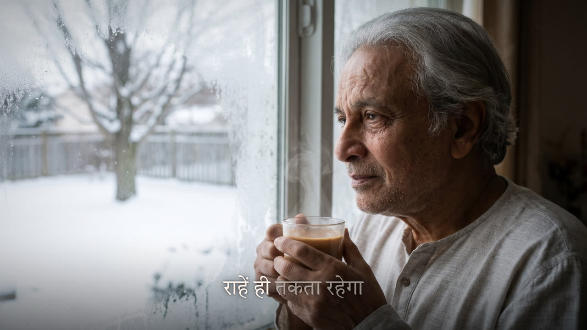
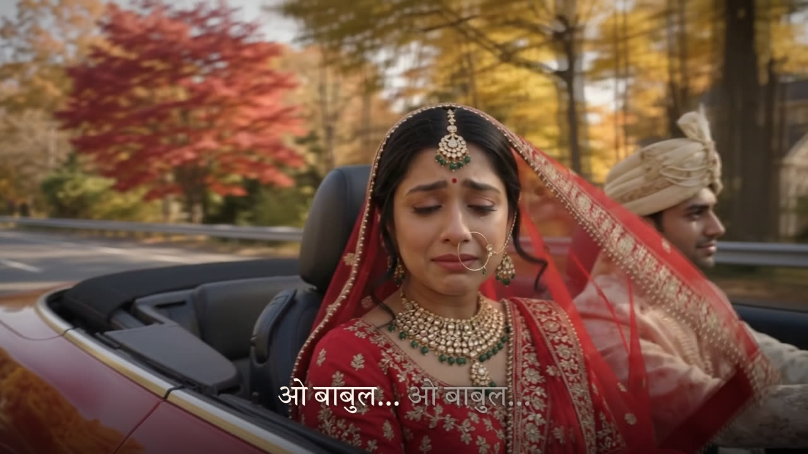

I am a poet at heart and a technologist by trade. For years my poems stayed on paper.
Turning a poem into a video song used to need a composer, a singer, a studio and an editor. That is real money for every poem. It also takes the one thing my working life does not leave me: long, uninterrupted hours.
That has changed. In one evening I turned "ओ बाबुल", a song about a daughter's vidaai, into two finished lyric videos, one in Hindi and one in English. I then packaged the whole process so the next poem costs me minutes of attention, not a weekend.
This page is the thinking behind it, step by step, the way I would approach any system at work. Skills, the Claude feature that made it repeatable, come near the end. That is deliberate. A skill is how you package a good architecture. It does not replace having one.
The two songs
Step 1Write the job down before choosing a tool
The most common mistake I see with gen AI is starting from the tool: "We have a model; what can it do?" An architect starts from the job, the limits and the bar for "good". So before touching anything I wrote this down.
The job
A poem goes in. A shareable video song comes out: music, a voice, the words on screen in time with the singing, pictures that tell the story, and a cover.
The constraints
- Almost no money. No studio, no paid editor, no per-video fee that adds up across a hundred poems.
- Almost no time. Minutes of my attention per song, not hours.
- My words stay my words. Nothing invents or rewrites the poem.
- No fake people. No generated likeness of a real person.
- It must repeat. The tenth song should be as easy as the second.
The quality bar
- The lyrics must land on the sung word, not roughly near it.
- The words must never cover a face or crowd the picture.
- It should feel made, not generated: a story that moves, not a slideshow.
That list did most of the architecture for me. Every later decision is just checking an option against it.
Step 2Break the job into stages
A "video song" is not one thing. It is a chain of smaller jobs, and each one has a different nature. Some are creative, some are measurement, some are just assembly. The chain from poem to published video has nine links.
Step 3Decide where gen AI belongs, one stage at a time
I use four questions for every stage, in this order. The first "yes" decides.
- Is this the soul of the work, or the accountability for it?Then a human does it. Writing the poem. Choosing what gets published.
- Is there one correct answer that a program can compute?Then plain code does it. Fitting a crop, joining files, encoding video. Code is exact, free to repeat and easy to check.
- Is it a narrow perception task that a trained model already does well?Then a specialised model does it, not a chatbot. Separating a voice from the music. Hearing which word is sung when.
- Does it need judgement, language or taste, where several answers are fine?Then gen AI does it, and a human approves. Composing a melody. Deciding which picture goes with which line.
| Stage | Done by | Why |
|---|---|---|
| Write the poem | Me | The soul of the work. Never automated. |
| Compose and sing it | Gen AI · Suno | Creative and generative, and the step I could not afford. I pick the take I like. |
| Make the visual story | Gen AI · image and video | Fictional people and places that fit the story. I choose which ones to keep. |
| Separate the vocals | Model · Spleeter | A narrow audio task with a proven model. No judgement involved. |
| Time each word | Speech model + code | The model hears; ordinary text matching lines its words up with mine. An LLM guessing timestamps would be wrong in a way that is hard to see. |
| Direct the video | LLM · Claude | Which picture tells which line is judgement about meaning. This is where an LLM earns its place. |
| Render the frames | Code · Python, ffmpeg | Thousands of frames that must be exact and identical on every run. |
| Check the result | Code, LLM, me | Code checks the file is whole; the LLM looks at stills for crowded text; I judge the feel. |
| Choose the cover and publish | Me | My name is on it. |
Notice how little of the pipeline is gen AI: two creative stages and one directing stage. Most of it is deliberately boring. Boring is what makes it cheap, fast and repeatable.
Step 4The roads not taken
Architecture is mostly saying no. Three tempting options failed the list from step 1.
Generate the whole video with AI
One prompt, one finished video song. It sounds ideal. But a generated video cannot promise that a word appears exactly when it is sung, or that it never covers a face. It changes on every run, so a small fix means regenerating everything. And it pays per second of video, every time. It fails the quality bar and the cost constraint at once.
Ask the LLM to do the precise work
An LLM can write a timestamp, but it cannot hear one. Ask it when a word is sung and it will answer confidently and often wrongly. The same goes for counting pixels or computing crops. When a question has one right answer, a model that predicts plausible text is the wrong instrument. I let the LLM decide what to do and let code and specialised models do it.
Build a proper app
A web app with uploads, a timeline editor and a render queue. That is weeks of work to save me minutes per song, and it would freeze my process before I knew what it should be. A folder of scripts plus an agent that understands them is the cheaper first version. If it ever needs to serve other people, the app can come later, built around a process already proven.
There was also a constraint I did not choose. The sandbox I worked in blocked the usual model download site. The design survived because each stage had a fallback: a second model host, then a method that needs no model at all. Plan for the environment you will actually get.
Step 5Use an agent as the glue
Once the stages were clear, I had a pile of good parts: a separator, two speech models, a renderer, a cover tool. Somebody still had to run them in order, read each result and decide what to do next. That somebody used to be me, and that is exactly the time I do not have.
This is the job an agent does well. An agent is an LLM that can call tools: run a command, read a file, look at an image. It works in a loop: choose a step, run it, read the result, decide again.
The split matters. The agent never draws a frame or computes a timestamp. It decides which script to run with which settings, and it judges what comes back. Three moments from that first evening showed it best:
- The network said no. The usual model hosts were blocked. The agent confirmed the block was policy, did not try to get around it, and found the same kind of models published on GitHub releases instead.
- The first method was not good enough. It first timed Hindi lines from the loudness of the isolated vocals, then moved to a speech model and text matching for word-level timing. Where a model still missed a line, it said so.
- It checked its own work. Before each full render it drew a few frames and looked at them. That caught English lines overlapping in fast verses, and lyrics fading into a white kurta.


Code for precision. Specialised models for perception. The LLM for judgement. Me for taste and accountability.
Step 6Package it as a skill so it repeats
An agent that worked out the process once has not given me a process. The next session starts from nothing. It might choose differently, forget a rule, or rediscover the same fallbacks the slow way.
A skill fixes that. It is a folder:
SKILL.md: a one-line description of when to use it, then the steps in plain language.scripts/: the deterministic parts from step 3, as ready-made programs.reference/: the detail the agent only needs sometimes, such as the plan format and how to check timing.
The clever part is progressive disclosure. At the start, Claude sees only the one-line description of each skill. Only when a request matches ("make a lyric video from this song") does it read the full instructions. It opens a reference file only when a step needs it. So a skill costs almost nothing until it is used, and you can have many.
---
name: lyric-video
description: Make a lyric video (MP4) from a song and the user's photos and clips...
argument-hint: "[song.mp3] [media-folder]"
---
The scripts do the mechanical work. You are the director.
1. Lyrics and timing separate.py → align.py
2. Draft the plan make_plan.py
3. Direct it put each picture on the line that is about it; check stills
4. Render render.py (parallel; the hook checks every MP4)
5. Cover cover.py make / applyThe skill is the architecture from steps 1 to 5, written down where the agent will read it. My judgement goes into the instructions once, not into every session.
Step 7Put controls around the skill
A skill tells the agent how to do the job. On its own it does not stop the agent doing something else. In my day job this is the difference between a procedure and a control. In Claude Code the controls are files that sit next to the skill.
- CLAUDE.md holds the standing rules, loaded in every session whether or not the skill runs: my lyrics only, no generated likenesses, small low lyrics, my credit on every cover, a plan before any rendering.
- Permissions in
settings.jsonturn those rules into limits. The skill's scripts and ffmpeg run without asking. Installing packages or downloading files needs my approval. My songs and media folders cannot be edited at all. - A hook runs after every render and checks the file: video and audio present, length matching the song. A broken file goes straight back to the agent to fix, before it reaches me.
- Subagents handle side jobs in their own fresh context. One reviews the lyric timing for suspect lines; another designs three covers and checks them at thumbnail size.
That is a small version of the same model I would want for any agent in a regulated firm.
The repoWhat's in this repository
Try it
git clone https://github.com/ranjangithub/video-production
cd video-production
python3 -m pip install -r requirements.txt # plus ffmpeg
cp ~/Music/my_song.mp3 songs/ && cp ~/Pictures/story/* media/
claude
> /lyric-video songs/my_song.mp3 media/Full setup is in the README. Use only photos and footage you have the right to publish.
TakeawaysWhat I would teach from this
- Start from the job and its limits, not the model. The constraints wrote most of my architecture.
- Ask the four questions at every stage. Human for soul and accountability, code for one right answer, specialised models for perception, gen AI for judgement and taste.
- Expect most of the pipeline to be boring. Gen AI did three stages out of nine. The other six are why the result is cheap, exact and repeatable.
- Never ask an LLM to fake precision. Let it choose and judge; let code and specialised models measure.
- Use an agent as the glue, not the engine. It runs the parts, reads the results and recovers when something breaks.
- Package what works as a skill. Write your judgement down once, where the agent reads it, and the tenth run matches the second.
- Put controls next to the skill. Rules that always hold, permissions that enforce them, checks that catch failures, and a human who approves.
My poems no longer wait for a budget or a free weekend. The craft stays mine: the words, the choices and the final yes. The machinery just stops being the reason they stay on paper.